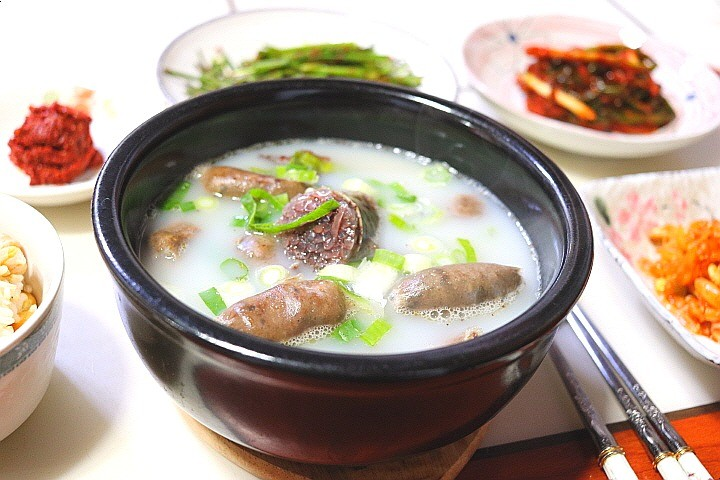

오늘은 보슬보슬 비가 오는 날씨입니다. 이런 말이면 이상하게 진한 순대 국물이 생각납니다. 마침 친구가 근처 유명한 국밥집이 있다하여 오늘의 맛집, 김포순대국밥을 찾아가 보았습니다.
이 국밥집은 30년 동안 이어온 전통 때문인지, 옛날 시골집 같은 느낌이 납니다.
이 곳의 메뉴는 오직 두 가지입니다. 역시 주인장의 자부심이 느껴지는 메뉴입니다.

뭔가 담백하게 담긴 순대 모습이 아주 보기 좋습니다.
뭐라 표현해야 할까요......
마치.......
걸레 같습니다. 이런 맛은 난생 처음입니다. 먹으면서 몇 번이고 헛구역질을 했습니다.
기가 막힙니다. 다신 안온다. 퉷!!